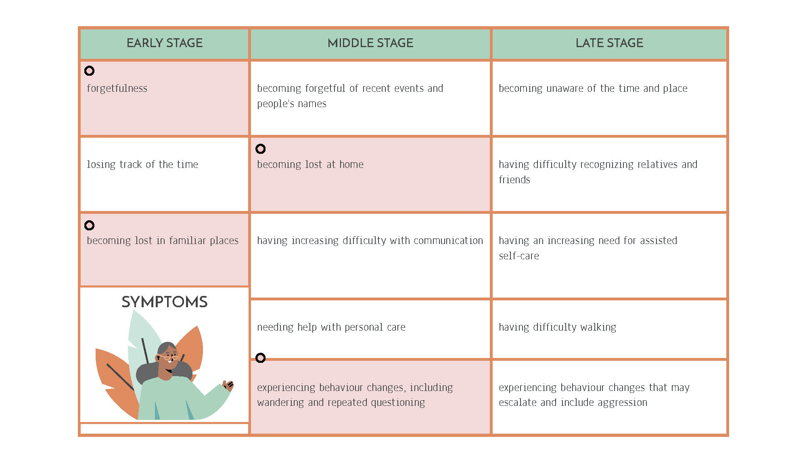

Project Overview
Age-related cognitive decline ranges from minor reductions in memory and executive function that do not interfere with daily life to more severe degrees that fall short of dementia but may interfere with some activities of daily living termed “mild cognitive impairment” (MCI). MCI may progress to dementia or remain static, and cognitive decline is also a risk factor for stroke. Dementia is an ‘umbrella’ term used to describe a range of symptoms associated with a decline in memory and thinking skills that interferes with daily living. Dementia is a progressive cognitive impairment that may cause impairment in many cognitive domains such as memory and language ability. Alzheimer’s disease is a progressive, degenerative disorder that attacks the brain’s neurons, resulting in memory loss, decreased thinking and language skills, and changes in behavior.4 Research conducted by the American Psychiatric Association found Alzheimer’s disease to be the most common form of dementia, accounting for roughly 50% to 75% of all dementia cases among the oldest adults in the nation.
Context
There is a significant number of people over 65 years old experiencing dementia. According to reports, there are 50 million cases of dementia worldwide with 10 million new cases every year. The number of people who have dementia is still increasing and it is estimated that there will be about 80 million dementia patients worldwide by 2040. At any given time, the estimated proportion of the general population aged 60 and over with dementia is between 5-8%. Many of these individuals cannot afford to hire caregivers or move to assisted living facilities, they require continuous care without which there is a serious risk of fatal accidents. For unattended Alzheimer patients, their once familiar home becomes their daily battleground. The ability to find one’s way in the world, known as wayfinding, is impaired in persons with Alzheimer’s disease. Senior residential environments such as independent living assisted living, and nursing home residences are often especially difficult for wayfinding, with long, non-distinctive hallways and poorly differentiated routes. However, many seniors with early and mid-stage dementia continue to live independently in their residences.
Impact
Wayfinding problems can cause anxiety, distress, and decreased interaction in persons with dementia.11 Wayfinding ability in older adults with dementia and Alzheimer's disease (AD) is progressively impaired due to ageing and deterioration of cognitive domains. Usually, the sense of direction is deteriorated as visuospatial and spatial cognition are associated with the sensory acuity.12 For family members who live far away and mainly use technology to communicate, this situation may bring added anxiety as they struggle to find a balance between work and caring for their elderly family members.
Importance
The eyeGlass provides an inexpensive care system that provides audio assistance for indoor navigation. eyeGlass consists of a spectacle attachment and an app interface. Users begin by scanning their indoor space with a camera of a mobile device. The app then creates a 3-dimensional physical model of the space with all the furniture, walls, windows, and doors. eyeGlass provides auditory feedback when the user comes in close proximity to an object thereby assisting with navigation through the physical space and promoting user independence. The device also monitors the users’ health and notifies their emergency contacts in the event of a fall or a stroke.
Existing technologies include iBeacon which uses Bluetooth Low-Energy (BLE) Technology to welcome guests as they arrive at sporting events and provides information to aid in museum navigation. iBeacon provides users with location awareness and opportunities for interaction between iOS devices and Bluetooth hardware.13 Magicplan is another existing product that can be adapted to meet the needs of the eyeGlass. Magicplan enables users to create floor plans with the camera of a smartphone device. Some of its features include automatically detecting and capturing windows, doors, furniture and other objects, measuring ceiling heights, drawing 2D and 3D plans, connecting laser distance meters via Bluetooth technology, generating elevation views of the interior space and creating virtual 360 panoramas of the scanned space.
Goals
The goals that the eyeGlass seeks to achieve include addressing issues such as mild cognitive impairment, associated mobility impairments, navigation and health monitoring, catering to being accessible to a broad neuro-diverse population, using real-time strategies and machine learning to understand the interaction between glasses and physical environment and tracking user response. The eyeGlass also seeks to incorporate audio feedback to guide navigation and to allow location-sharing between immediate family to ensure the health and safety of elder users in the event of a stroke or a fall.
Specific Aims
The specific aims of this academic exercise include-
1. To identify the target population for user interviews and usability testing of the prototype.
2. To develop a unique and inexpensive attachable for an existing high utility object of the target population
3. To help immediate family members of the user track and monitor their location and wellbeing.
4. To identify potential partners to collaborate with.
Innovations
eyeGlass uses computer vision via a detachable tiny voice sensor in a novel way for navigation in the house. Elderly members can initially scan their physical space using eyeGlass app, and it will generate a 3D model of the scanned floor plans and its estimated spatial distance between each object. By pairing up the glasses with the smartphone via Bluetooth Low Energy (BLE), eyeGlass can help elderly with wayfinding in the house via audio/voice communication to provide estimated distance from their current position to the destination as well as for wayfinding based upon the previously scanned physical space and floor plans. EyeGlass also provides private active and passive feedback in the form of audio communication. From the active feedback standpoint, eyeGlass provides real-time audio feedback to actively guide users to travel to their intended destination. For passive feedback, the user can input a voice inquiry by simply voicing a request (for example, “how can I get to the kitchen from here?”) and the voice assistant will guide the user through the process. Besides their need to seek help for navigation in the house, many elderly members are at risk of falling as the number of chronic disabilities increases.14 To detect these events, we pre-train a fall detection algorithm using the event classification feature of machine learning in the glasses for real-time tracking and detection.
sides detecting falls, the glasses could also detect any abnormal body movements (e.g. irregular shaking or swaying) and predict the risk of falling or stroke based on these irregular movements and can notify their emergency contacts immediately before the fall occurs.
The spectacle attachment consists of five components-
• A miniaturized microcontroller board with an embedded Bluetooth Low Energy chip that wirelessly transmits data from the glasses to the smartphone.
• A voice recognition sensor that provides audio guidance for wayfinding.
• A proximity sensor that measures distances to avoid falls resulting from hitting objects.
• An accelerometer and gyroscope that allows real-time detection of falls and strokes.
• And finally, a global positioning system that tracks the user's current location and relays this information to the primary caregiver or family member.
These user applications establish the novelty of functions of our product which is user-centered, easy to adopt, and innovative. Moreover, taking the user’s aesthetic preferences into consideration, we aim to design the smart glasses frame to be customizable with detachable lenses that fit the users’ personal eyesight. This provides users of the eyeGlass with the opportunity to integrate their personal needs and aesthetic into their daily lifestyle.
Approach
Needs assessment activities
Based on existing literature, there are three major needs that have been identified for older adults experiencing symptoms of dementia.
Navigation- Research conducted on wayfinding found navigation performance decreases with increased floor plan complexity, but improves with increased visual access, architectural differentiation, improved floor plan configurations, and consistent use of signage and room numbers.
Independence- People with cognitive impairments prefer to live and function as independently as possible. When they cannot navigate safely and freely, the burden on caregivers and community services increases and the opportunities to act independently and participate fully decreases.
Tracking- Innovative and state-of-the-art technologies allow the patients with mild cognitive impairments out-of-home and indoor mobility, independence and better quality of life. Real time monitoring may in turn reduce the distress and burden of family caregivers and allow them to continue caring for the elder in the community for a longer period of time [17].
Technical Development
The eyeGlass’s system consists of five hardware components: (1) a miniaturized microcontroller board with Bluetooth Low Energy (BLE) embedded, (2) a two-megapixel camera, (3) a proximity sensor, (4) an accelerometer connected to a gyroscope, (5) a global positioning system (GPS). The miniaturized microcontroller board with BLE wirelessly transmits data from the glasses to the eyeGlass app which then functions as a tiny controller for directing and communicating signals between each hardware component. To help with navigation in the house, a two-megapixel camera enables the physical space and voice recognition for communication and provides audio guidance for wayfinding when the user is moving from room to room. A proximity sensor is used to sense the distance between physical objects to avoid risky falls from hitting the objects. Moreover, a fall detection machine learning algorithm is pre-trained in the microcontroller and, by using the embedded accelerometer and gyroscope, eyeGlass detects any risky falls or stroke events and immediately sends a notification to the user’s emergency contact. Finally, a GPS is wired to the microcontroller in the glasses with TinyGPS Arduino library, installed to track the user’s current positioning in longitude and latitude coordinates and transmits this data to the eyeGlass app in the smartphone. The indoor house map function in the app translates this data into a visual floor plan representation that displays the user’s current location. The primary caregiver or emergency contact can monitor the user in real-time. This in turn reduces the distress and burden of family caregivers and allows them to continue caring for the elderly in the community for a longer period of time.
Prototype testing and refinement
To assess the usability of eyeGlass, we plan to do usability testing by inviting 30 elderly patients with Alzheimer’s disease to use the product in their home environment for one week to evaluate the effectiveness and user-friendliness of the implemented functions in glasses as well as the app in the smartphone. Based on this usability test, we plan to evaluate the two main components of the product: Functionality accuracy (quantitative evaluation) (machine learning accuracy for fall detection displayed with confusion matrix, location tracking accuracy, and wayfinding accuracy) and user experience evaluation (qualitative evaluation) in user friendliness and aesthetic of the product. By conducting the user study in both quantitative and qualitative evaluations, our aim is to refine eyeGlasses’ functional features and appearance.
Broader Impact
According to the CDC, more Alzheimer patients are dying at home.18 As the stage of Alzheimer’s disease progresses, the need for caregivers dramatically increases.19 There are many families with Alzheimer’s patients who cannot afford hiring caregivers or going to special-care houses, this leads to accidents and potentially death for unattended Alzheimer’s patients. The primary aim of the eyeGlass is to target the patients who are in the early and middle stage of Alzheimer’s disease. The eyeGlass focuses on providing these users affordable care and guidance at home while releasing the burden of constant caregiving off the primary caregiver’s shoulder. The eyeglass provides Alzheimer’s patients and their families with a safety check and notifications at home. As current smart home technology advances, special-care homes are not the only option for patients with Alzheimer’s disease. The eyeglass provides Alzheimer’s patients and their families an opportunity to continue to stay in their familiar environments without the need for constant monitoring. As the eyeglass specifically targets memory loss issues such as identifying rooms, navigation, and safety alert features, Alzheimer patients are able to easily navigate in their houses. At the same time, primary caregivers and immediate family members can monitor and track the health condition of the user as the glasses connect with the phone app and communicate the current whereabouts of the user.
Existing Technology
Currently, products like Amazon Echo, Google Glasses, and Google Home are actively engaging in home care and emergency help. However, the focus for elderly, particularly for Alzheimer’s patients is lacking. The eyeGlass functions as a bridge between Alzheimer’s patients, home-assistant devices and the user’s family. Traditionally, the conversation between the user and home-assistant devices, or user and family are not connected simultaneously.19 Now, the eyeGlass directly messages Alzheimer patients’ families if accidents are detected through the sensor. It skips the additional step where patients locate their phone to call their families for help. The concept of using the glass frame to simplify the process is groundbreaking. The ergonomic factor is also a key factor in the product’s design language. There is considerable amount of literature that suggests that for most Alzheimer’s patients, cognitive performance and visual learning might not be at their peak levels.20 Therefore, the glass frame is designed to contain only mini-sensors and mini-cameras instead of AR and VR and fits the user’s daily habits. The ergonomics of the eyeGlass has the promotes safety, user navigation and independence amongst Alzheimer’s patients.
Limitations
Some of the limitations of the eyeGlass are the inherent indoor nature of the product. Future design considerations include expanding the product context to the outdoor environment to assist in outdoor navigation. This would greatly benefit the user to navigate from their homes to familiar landmarks such as the grocery store, neighborhood laundry, parks etc. Another limitation of the product is the feedback mechanism framework that it operates on. Usability tests need to be conducted to test the hypothesis that the target users prefer audio feedback from their spectacles as opposed to haptic or other sensory feedback. Conducting thorough usability tests and developing product prototypes in response to the feedback is essential in developing a successful prototype of the eyeGlass.
With the eyeGlass, Alzheimer’s patients are able to perform their normal routines in their homes. Activities like gardening, cooking, and taking care of themselves become joyful once again. Family members and caregivers can log into the app and check-in on the well-being of their loved ones no matter where they are. eyeGlass truly has the potential to improve the quality of life for millions of Alzheimer patients in the world.

Team: Elle Luo, Sabah Mohammed, Caroline Sun